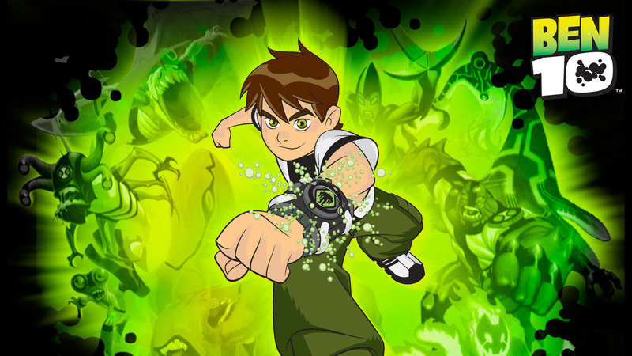

Ben
Ben Tennyson, a 10-year-old boy, discovers a magical device that can turn him into 10 different alien heroes, each with its own unique abilities.
With this newfound power, Ben, Grandpa Max and cousin Gwen help others and stop evildoers - but that doesn't mean he doesn't cause some superpowered kid mischief once and a while.
Ben wears a black and green shirt with the number 10 on the top left corner.
He is cocky, rebellious, fun-loving, and has a good heart. However, Ben is shown to be prone to jealousy over Gwen's acquisition of the Omnitrix. Ben also displays underlying maturity through his "mentoring" of Gwen and is even disappointed in Gwen's irresponsible usage of the watch.
